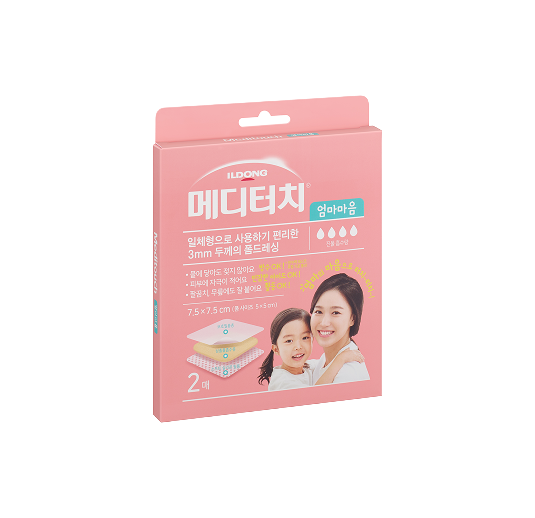
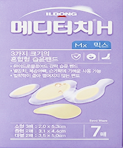
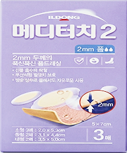
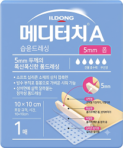

브랜드스토리
브랜드스토리
HOME > 브랜드스토리 > 메디터치
메디터치Meditouch
피부 장벽을 안전하게 지켜주는 메디컬 습윤 밴드

- 상처를 흡수하고 외부 오염으로부터 보호하는 폼드레싱 브랜드
- Medical과 Touch를 조합해 따뜻한 상처 케어를 의미합니다.
- 상처 상태에 따라 다양한 형태와 두께를 선택할 수 있습니다.
- 2mm·3mm 폼드레싱으로 간편한 상처 관리가 가능합니다.
효능/효과
메디터치 제품 라인업
-
- 상처 분비물 흡수
- 친수성 폼이 상처에서 발생하는 분비물을 흡수합니다.
-
- 상처 부위 보호
- 외부 오염으로부터 상처를 보호하고 편안한 상처 관리를 돕습니다.
-
- 상처 상태에 맞춘 다양한 제품
- 두께와 형태가 다른 다양한 제품으로 상처의 상태와 사용 환경에 맞춰 선택할 수 있습니다.
-

- 메디터치H
-
상처를 보호하고
삼출물을 흡수하는 폼드레싱
- 삼출물 흡수
- 상처 보호
- 폼드레싱
-

- 메디터치2
-
2mm 친수성 폼으로
간편한 상처 관리
- 친수성 폼
- 간편한 사용
- 우수한 밀착력
-

- 메디터치A
-
상처에 부드럽게 밀착해
상처를 보호하는 드레싱
- 부드러운 밀착력
- 상처 보호
- 편안한 착용감